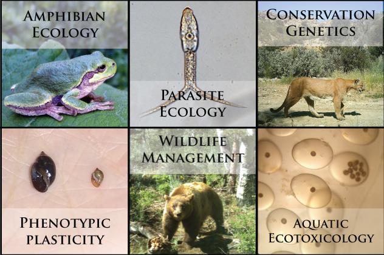

We are integrative evolutionary ecologists who strives to work across disciplines at at multiple levels of biological organization. For that reason, research in the CRAP lab is multi-tiered and collaborative. We integrate laboratory experiments, field studies, molecular genetics, toxicology, geographic information systems, and quantitative ecological models to investigate individual, population, and community-level phenomena. Our research has a broad taxonomic scope, but has primarily focused on amphibians, mammals, gastropods, trematodes, and nematodes. We have a strong focus on conservation, including disease and parasite transmission.
